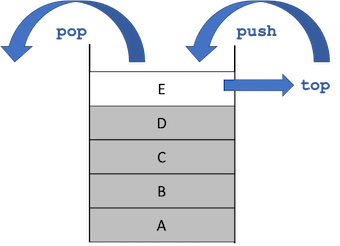

Methodenstack¶
Programme und die dazugehörigen Variablen (und deren Werte) befinden sich zur Ausführung im Arbeitsspeicher. Der Speicher ist in Blöcke (Bytes) unetrteilt, die jeweils adressierbar sind. So könnte alles jeweils eine Adresse zugeordnet werden und mit einer komplexen Adressverwaltung ließen sich die Einzelteile ansprechen. Das ist jedoch viel zu aufwendig und inperformant. Deshalb werden Speichermodelle verwendet, die die Verwaltung der Programmteile erleichtern. Ein solches Speichermodell ist der Stack (Stapelspeicher).
Bei einem Stack gilt das Last in first out (LIFO) Prinzip, also das, was zuletzt in den Stack kam, muss auch als erstes wieder hinaus. tatsächlich gibt es nur ganz wenige Funktionalitäten, um einen solchen Stack zu verwalten:
push: Element oben auf den Stack hinzufügenpop: Element von oben aus dem Stack entfernentop(manchmal auchpeekgenannt): auf oberes Element zugreifen (lesen, aber im Stack belassen)
Folgende Abbildung stellt diese Methoden grafisch dar:

Für einen solchen Stack gibt es jetzt nur drei Möglichkeiten:
- Element
Ekann gelesen werden (aber im Stack belassen) -top - Element
Ekann aus dem Stack entfernt werden -pop - ein neues Element (z.B.
F) kann zum Stack hinzugefügt werden -push(dann kann auchEnicht mehr gelesen werden; so wie bereitsA-D)
Abarbeitung von Methoden¶
Wir betrachten das Speichermodell Stack, weil die Abarbeitung von Methoden nach diesem Prinzip funktioniert. Methoden, die abgearbeitet (aufgerufen) werden, werden in einem solchen Stack angeordnet. Wir betrachten ein Beispiel:
1 2 3 4 5 6 7 8 9 10 11 12 13 14 15 16 17 18 19 20 21 22 23 24 | |
In diesem Beispiel gibt es drei Methoden:
- die
main()-Methode mit der Variablenva, - die
a()-Methode mit den Variablenvaaundvabund - die
b()-Methode mit den Variablenvbaundvbb.
Die main()-Methode ruft die Methode a() auf und die a()-Methode ruft die b()-Methode auf.
Die Ausgabe des Programms ist wie folgt:
main() --> va = 0
+--a() --> va = 0 vb = 1
+----b() --> vba = 0 vbb = 1
main() --> va = 1
+--a() --> va = 1 vb = 1
+----b() --> vba = 1 vbb = 1
main() --> va = 2
+--a() --> va = 2 vb = 1
+----b() --> vba = 2 vbb = 1
Die main()-Methode ruft also drei Mal (innerhalb der Schleife) die a()-Methode auf, welche wiederum die b()-Methode aufruft.
Bei dem Aufruf von Methoden passiert folgendes:
- bei jedem Methodenaufruf wird eine Methodeninstanz auf den Stack gelegt
- eine Methodeninstanz sind alle zur Laufzeit veränderlichen Daten, die zur Methode gehören (Parameter und lokale Variablen)
- nach Abarbeitung der Methode (oft durch
return- muss aber nicht, wie in unserem Beispiel) wird die Methodeninstanz wieder aus dem Stack entfernt (und somit auch alle dazu gehörenden Daten (Parameter, lokale Variablen und deren Werte))
In unserem Beispiel passiert also folgendes:


- Die
main()-Methode wird ausgeführt; die Variablevawird erzeugt und bekommt den Wert0. Diemain()-Methode erzeugt eine Ausgabe auf die Konsole und ruft dann die Methodea()auf. - Die
a()-Methode wird ausgeführt; die Variablenvaaundvabwerden erzeugt und bekommen die Werte0und1. In dera()-Methode erfolgt eine Ausgabe auf die Konsole. Diea()-Methode ruft die Methodeb()auf. - Die
b()-Methode wird ausgeführt; die Variablenvbaundvbbwerden erzeugt und bekommen die Werte0und1. In derb()-Methode erfolgt eine Ausgabe auf die Konsole. Danach ist die Ausführung derb()-Methode zu Ende. Alles, was mit derb()-Methode zu tun hat, insb. die Variablenvbaundvbbwerden aus dem Speicher gelöscht. - Zurück zur Ausführung von
a(). Keine weitere Anweisung - die Ausführung dera()-Methode zu Ende. Alles, was mit dera()-Methode zu tun hat, insb. die Variablenvaaundvabwerden aus dem Speicher gelöscht. - Zurück zur Ausführung von
main(). Die Variablevabekommt innerhalb der Schleife den neuen Wert1. - Die Variable
vahat nun den Wert1. Diemain()-Methode erzeugt eine Ausgabe auf die Konsole und ruft dann die Methodea()auf. - Die
a()-Methode wird ausgeführt; die Variablenvaaundvabwerden erzeugt und bekommen die Werte1und1. In dera()-Methode erfolgt eine Ausgabe auf die Konsole. Diea()-Methode ruft die Methodeb()auf. - Die
b()-Methode wird ausgeführt; die Variablenvbaundvbbwerden erzeugt und bekommen die Werte1und1. In derb()-Methode erfolgt eine Ausgabe auf die Konsole. Danach ist die Ausführung derb()-Methode zu Ende. Alles, was mit derb()-Methode zu tun hat, insb. die Variablenvbaundvbbwerden aus dem Speicher gelöscht. - Zurück zur Ausführung von
a(). Keine weitere Anweisung - die Ausführung dera()-Methode zu Ende. Alles, was mit dera()-Methode zu tun hat, insb. die Variablenvaaundvabwerden aus dem Speicher gelöscht. - Zurück zur Ausführung von
main(). Die Variablevabekommt innerhalb der Schleife den neuen Wert2. - Die Variable
vahat nun den Wert2. Diemain()-Methode erzeugt eine Ausgabe auf die Konsole und ruft dann die Methodea()auf. - Die
a()-Methode wird ausgeführt; die Variablenvaaundvabwerden erzeugt und bekommen die Werte2und1. In dera()-Methode erfolgt eine Ausgabe auf die Konsole. Diea()-Methode ruft die Methodeb()auf. - Die
b()-Methode wird ausgeführt; die Variablenvbaundvbbwerden erzeugt und bekommen die Werte2und1. In derb()-Methode erfolgt eine Ausgabe auf die Konsole. Danach ist die Ausführung derb()-Methode zu Ende. Alles, was mit derb()-Methode zu tun hat, insb. die Variablenvbaundvbbwerden aus dem Speicher gelöscht. - Zurück zur Ausführung von
a(). Keine weitere Anweisung - die Ausführung dera()-Methode zu Ende. Alles, was mit dera()-Methode zu tun hat, insb. die Variablenvaaundvabwerden aus dem Speicher gelöscht. - Zurück zur Ausführung von
main(). Die Variablevabekommt innerhalb der Schleife den neuen Wert3. Die Bedingung der Schleifeva<3ist somitfalse. Die Schleife wird verlassen, keine weitere Anweisung inmain(). Die Abarbeitung des Programms ist zu Ende. Alles, was mit dermain()-Methode zu tun hat, insb. Variablevawird aus dem Speicher gelöscht.
Lebensdauer und Sichtbarkeit von lokalen Variablen¶
Die Variablen, die wir bis jetzt verwendet haben, wurden in Methoden deklariert oder in Anweisungsblöcken, die in Methoden liegen (z.B. in for-Schleifen). Bei solchen Variablen sprechen wir von lokalen Variablen. Wir werden später noch globale Variablen kennenlernen. Zunächst interessieren uns aber nur die lokalen Variablen. Das obige Beispiel zeigt, dass lokale Variablen, also solche, die in Methoden deklariert werden, nur so lange existieren, wie diese Methode ausgeführt wird. Generell gilt:
Eine Variable existiert in dem Anweisungsblock, in dem sie deklariert wurde, solange dieser Anweisungsblock ausgeführt wird.
Schauen wir uns dazu die Situationen in dem oberen Beispiel an:
- Die Variable
vawird in dermain()-Methode deklariert. Diemain()-Methode wird die ganze Zeit ausgeführt. Also existiert auch die Variablevadie gesamte Zeit des Programmablaufs. - Die Variablen
vaaundvabwerden in dera()-Methode deklariert. Sie existieren immer nur dann, wenn diea()-Methode ausgeführt wird. In unserem Beispiel existieren die Variablenvaaundvabalso drei Mal (sie werden drei Mal erzeugt und drei Mal wieder vollständig gelöscht). Da die Methodea()die Methodeb()aufruft, existieren die Variablenvaaundvabauch während der Ausführung vonb(), da zur Zeit der Ausführung vonb()ja aucha()ausgeführt wird (undmain()). - Die Variablen
vbaundvbbwerden in derb()-Methode deklariert. Sie existieren immer nur dann, wenn dieb()-Methode ausgeführt wird. In unserem Beispiel existieren die Variablenvbaundvbbalso drei Mal (sie werden drei Mal erzeugt und drei Mal wieder vollständig gelöscht).
Die Lebensdauer eine Variable wird somit von der Ausführungsdauer des Anweisungsblockes bestimmt, in dem die Variable deklariert wurde.
Lebensdauer
Es ist eine gängige Praxis, alle Variablen, die man in einer Methode verwenden möchte, am Anfang der Methode zu deklarieren. Erstens sieht man dann, welche Variablen innerhalb der Methode alle verwendet werden und zweitens kann man diese Variablen in allen Anweisungsblöcken innerhalb der Methode verwenden. Einzige Ausnahme stellen Laufvariablen der for-Schleifen dar. Diese werden häufig direkt in der for-Schleife deklariert (for(int i=0, i<10; i++){}). Sie existieren dann aber auch nur in dieser for-Schleife! Außerhalb der for-Schleife existiert diese Variable dann nicht (mehr)! Das bedeutet auch, dass wenn Sie diese Variable in einer anderen for-Schleife verwenden wollen, müssen Sie sie dort erneut deklarieren.
Unter Sichtbarkeit einer Variablen versteht man die Möglichkeit, auf diese Variable zuzugreifen (also ihr entweder einen neuen Wert zuzuweisen oder ihren Wert auszulesen). Generell gilt:
Eine lokale Variable ist in dem Anweisungsblock sichtbar, in dem sie deklariert wird und in allen Anweisungsblöcken, die sich in diesem Anweisungsblock befinden. Außerhalb des Anweisungsblockes, in dem die Variable deklariert wurde, ist die Variable nicht sichtbar.
Das heißt für unser Beispiel, dass die Variable va nur in der main()-Methode sichtbar ist (also nur dort auf sie zugegriffen werden kann/sie nur dort verwendet werden kann), die Variablen vaa und vab nur in der a()-Methode verwendet werden können (sichtbar sind) und die Variablen vba und vbb nur in b().
Sichtbarkeit
Der Vorteil dieser lokalen Sichtbarkeit besteht darin, dass man sich z.B. keine Sorgen machen muss, ob eine gleichnamige Variable evtl. bereits in einer anderen Methode deklariert wurde. Eine Variable darf ja immer nur einmal deklariert werden. Da alle anderen Variablen aber nicht in der eigenen Methode sichtbar sind, gibt es keinerlei Konflikte mit anderen lokalen Variablen. Die lokalen Variablen aus anderen Methoden haben mit den Variablen aus der eigenen Methode gar nichts zu tun. Außerdem ist es auch nicht möglich, einfach Werte von Variablen aus anderen Methoden zu schreiben oder zu lesen. Das würde ansonsten große Sicherheitsprobleme mit sich bringen und man könnte Programme auch leicht zum Absturz bringen.